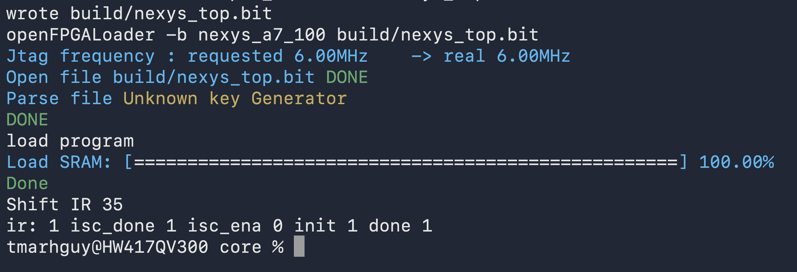

Dispatch · Build Tooling
Exploring Beyond Vivado
Open-source FPGA synthesis on the Nexys A7: Yosys, nextpnr-xilinx, Project X-Ray, openFPGALoader.
With the HDMI 12-bit PMOD test successfully showing video out, my next hurdle was the build process itself. Up until now, I've been relying on Xilinx Vivado for synthesis and routing.
Vivado on my old Windows machine feels heavy and incredibly slow by default. Simple designs take forever, so I began reading about faster open-source FPGA toolchains.
My research points to a completely open-source (FOSS) stack tailored for the Nexys A7-100T:
- Yosys for fast synthesis (converting SystemVerilog/Verilog to a JSON netlist)
- nextpnr-xilinx for lightning-fast place and route
- Project X-Ray for generating the final bitstream
- openFPGALoader for flashing the board via JTAG
openXC7's Nix flake is Linux-only, so on the Mac the same stack is assembled from OSS CAD Suite (yosys, openFPGALoader), nixpkgs (nextpnr-xilinx, bbasm), and a local Project X-Ray bitgen build (fasm2frames, xc7frames2bit). The hdmi_test Makefile and scripts/env.sh wire that together.

Going forward, I plan to transition away from Vivado on my laptop and handle all future synthesis natively on my Mac using this open-source stack. Once I figure out the exact Makefile wiring to compile the entire Tomato core, the build-to-flash loop should drop from painful minutes down to mere seconds!
Vivado was very useful for helping me build an intuition of the synthesis, implementation, and bitstream cycle. It helped me visualize the nets and understand why a constraint file is needed for standards like LVCMOS33.